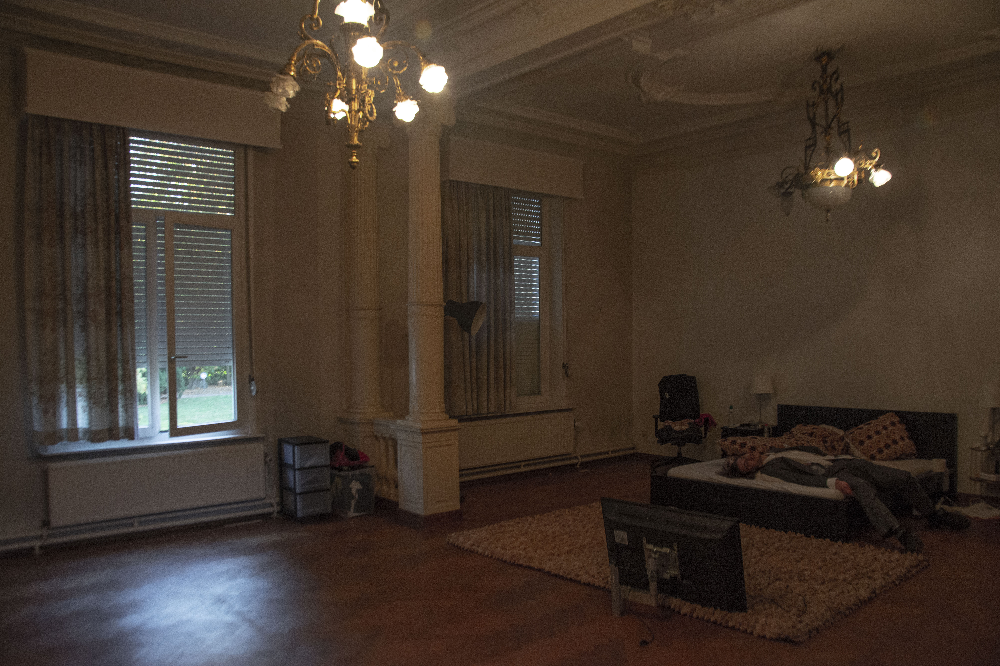

"Mijn bed kan een oase van rust zijn, anderzijds een kille plek waar ik transformeer in een schimmel"
Rusten wordt snel aanstanjagend vindt Falco. Hij heeft het gevoel dat hij soms vastplakt aan zijn bed met als gevolg dat hij onproductief blijft voor een lange periode.
Een leven zonder sociaal contact kan cruciaal zijn en leiden tot afwijkende psychische gesteldheden.
Het contact met (huis)dieren kan dit verhelpen, dit kan Falco beamen.
Hij heeft namelijk een landschildpad en kat genaamd Max Nova in zijn bezit. Toen ik foto's kwam nemen bij hem thuis kon ik de sterke band tussen zijn twee huisdieren meteen merken. Het loopt zodanig uit de hand dat de kat van Falco een brandwonde aan haar oor heeft door de lamp van de landschildpad.